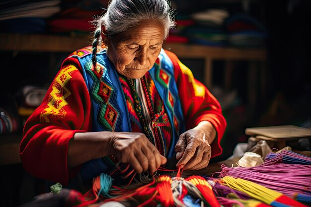

01 / Occasion wear
Made for memories
Graceful silhouettes for weddings, celebrations and special gatherings.
Discover more →Discover timeless Indian style, exquisite embroidery and perfectly finished outfits — thoughtfully created for the moments that matter.
From celebration-ready ensembles to everyday elegance, find a look that feels unmistakably yours.
Graceful silhouettes for weddings, celebrations and special gatherings.
Discover more →
Intricate patterns and delicate accents that make every piece special.
Explore craftsmanship →
Beautifully stitched pieces selected for effortless everyday dressing.
View styles →Thoughtful fits. Timeless details. Confidence in every thread.
Let's create your look
We bring together beautiful fabrics, considered design and skilled finishing to help you feel confident in every occasion. Choose a ready-made favourite or work with us on a look made around you.